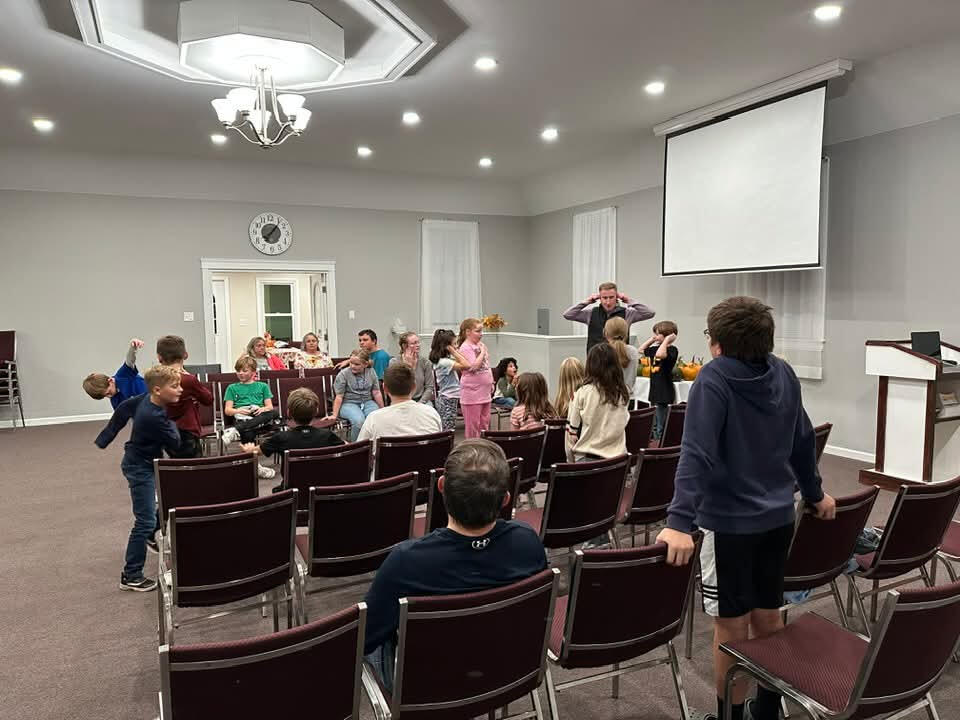

Ministries
The Lord has called us to help people of all ages grow in faith and find biblical guidance for every stage of life (Jude 1:20-21). Listed below are the different ministries that we are actively involved in or support.
Youth Work
Hosted at CBC (Oct. - May), Good News Club is a time of fun, games and most importantly a time in God's Word for children ages 4-12.
Hosted at CBC, June 16th - 20th, we offer a Vacation Bible School for ages 4-12. This is a time of singing, puppets, skits, Bible lessons, crafts, activities, and more!
Every November at CBC we join Samaritan’s Purse in Operation Christmas Child. We fill shoeboxes with gifts to send to children in need around the world along with the message of the Gospel of Jesus Christ. Learn More
Mountain View Bible Camp provides Christ-centered programs with a blend of activities focused on spiritual and physical development that emphasizes a personal relationship with the Lord Jesus Christ. Campers are shown from the Bible that they can have eternal life, and that this life is found in Jesus, the Son of God. Learn More
Bible Teaching
Anchors For Life is a Christian ministry that seeks to help individuals anchor their life on the Solid Rock, who is Christ, by teaching and applying the living Word of God. Our hope is embodied in Christ Himself, who has entered into God’s presence in the heavenly Most Holy place. Learn More
Missions
Missions in Focus – Conviction for our minds. Passion for our hearts. Ministry for our hands. Missions in Focus is a biennial missions conference held at Mountain View Bible Camp in Pennsylvania. Learn More
Till Christ Returns Outreach Ministries engages and inspires young people with the transformative message of the Gospel of the Lord Jesus Christ. Through Vacation Bible School style events, retreats, camps, and mission teams, they directly reach children, while also equipping others with the resources and training needed to host their own outreach initiatives. Learn More
Literature
Grace & Truth, Inc. is an evangelical, non-denominational Christian ministry that publishes gospel tracts, tracts and booklets for Christians, and a monthly magazine. Its readers are world-wide. It is supported by free-will offerings from those who value its work and those who use its material. Learn More
The Bereans Publishing Ltd. is a Christian publishing house, named after the Bereans (Acts 17:10, 11). It specializes in the publication of Christian literature and the selling of other Christian literature. Learn More
Believers Bookshelf exist for the publication, purchasing, selling and dissemination of Bibles and Christian literature which emphasize dispensational and ecclesiastical teaching from the Word of God. Learn More
Believers Bookshelf Canada is a non-profit Christian literature ministry. It functions as both a publisher and distributor, offering a wide range of scripturally grounded materials aimed at supporting spiritual growth and biblical understanding. Learn More
Elder Care
Emmanuel Home Personal Care provides a warm, family-like atmosphere which is designed to promote comfort, safety, and independence while giving the elderly access to the assistance they may need with activities of daily living. Learn More
Carmel Hills is a continuing care retirement community for Christians. It has specialized in the care and encouragement of God’s people since 1980. Learn More
